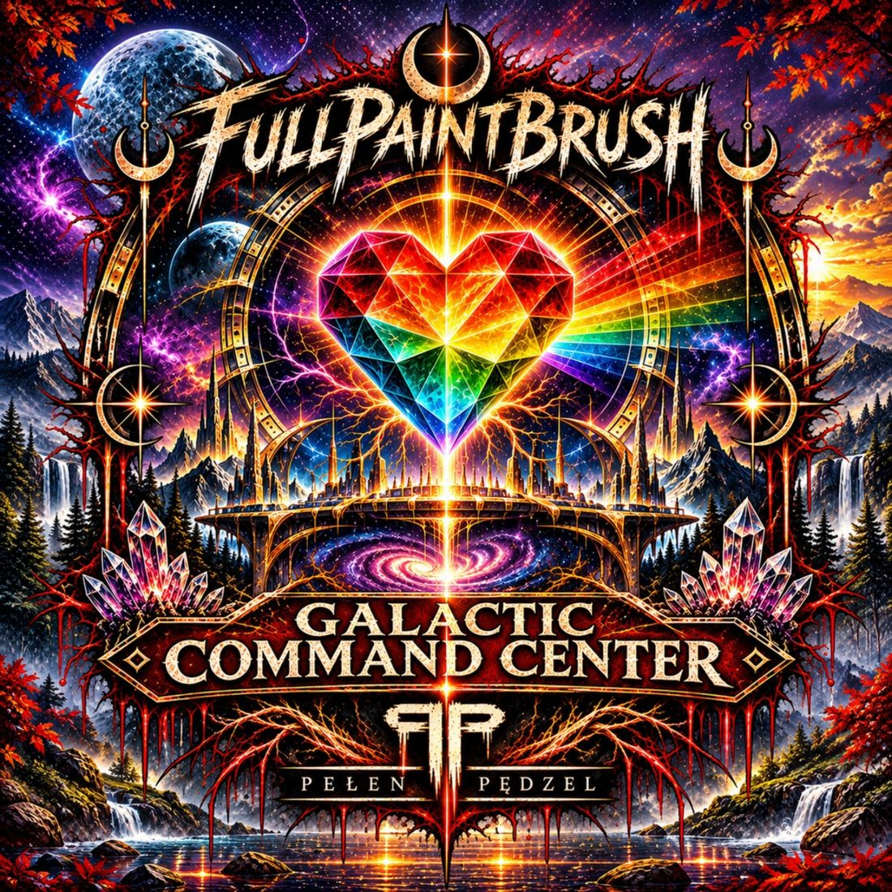

Pełen Pędzel / Muzyka
ŚCIEŻKA DŹWIĘKOWA
Muzyka
Muzyka powstała jako naturalne uzupełnienie książki. Niektórych rzeczy nie da się wyrazić wyłącznie zdaniem — potrzebują rytmu, ciszy między wersami i emocji.



ŚCIEŻKA DŹWIĘKOWA
Muzyka powstała jako naturalne uzupełnienie książki. Niektórych rzeczy nie da się wyrazić wyłącznie zdaniem — potrzebują rytmu, ciszy między wersami i emocji.
